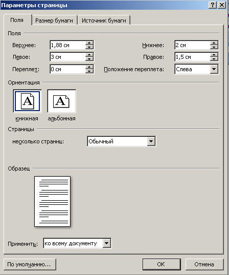

Для изменения размеров полей страницы на вкладке Разметка страницы в группе Поля выберите нужный размер полей.
Если стандартный размер полей Вас не устраивает, выберите Настраиваемые поля в той же группе. В появившемся диалоговом окне Параметры страницы на вкладке Поля установите нужные размеры полей. Здесь же можно задать такие параметры, как ориентация страницы, ширина переплета и наличие зеркальных полей.

Назад | Содержание | Вперед